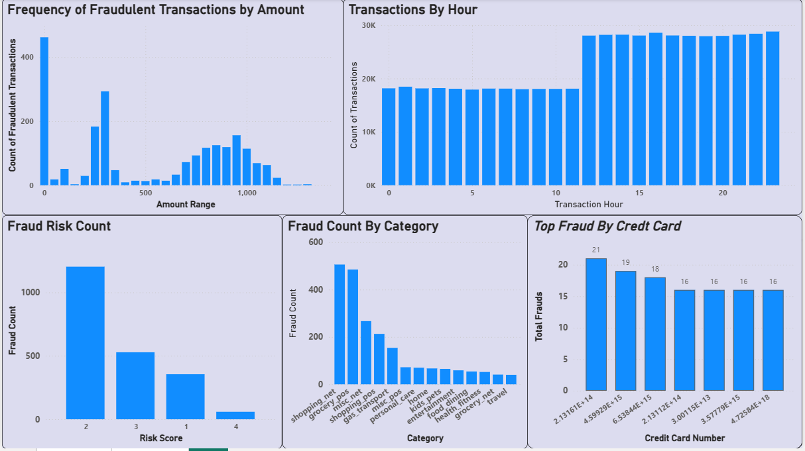
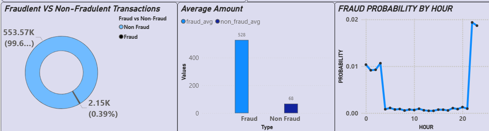

The project focuses on building an interactive fraud detection and monitoring system using Power BI to identify, analyze, and visualize patterns in fraudulent financial transactions. It combines data preparation, feature engineering, and advanced analytics to help organizations detect anomalies early, understand fraud trends across different dimensions (time, amount, location, category), and make proactive prevention decisions.
The dataset was sourced from a publicly available credit card transactions dataset containing both fraudulent and non-fraudulent records. It spans multiple transaction categories, locations, and time periods, providing rich detail for fraud pattern analysis. The data includes transaction-specific attributes such as transaction_id, transaction_time, transaction_amount, category, credit_card_number, and is_fraud indicators.
For time-based analysis, the transaction_time field was processed to extract features like hour of transaction, enabling the identification of high-risk fraud periods. Location data was mapped to city and country levels for geographical fraud hotspot detection. Risk scores were included to evaluate the severity of fraudulent activity, while transaction categories helped in determining sector-wise vulnerabilities.
Data preparation was performed in Power Query, including cleaning, handling missing values, and optimizing relationships for a star-schema model. This allowed the integration of multiple tables—transactions, risk metrics, and location mappings—into a unified analytics solution for in-depth, interactive fraud monitoring in Power BI.
Like mentioned earlier, the dataset consists of transactional records labeled as fraudulent or non-fraudulent. Our initial ideas were to identify peak fraud hours and create geographical heatmaps to pinpoint fraud-prone regions. While these were effective from a visualization perspective, we wanted to expand the scope into a more analytical problem statement.
Fraud Risk Pattern Analysis:-
Our first analytical approach was to determine recurring fraud patterns based on transaction categories and amounts. This required segmenting transactions by time-of-day, location, and category to observe potential risk clusters. While this revealed useful trends, we realized the dataset allowed us to explore deeper temporal features that could provide higher business impact.
Our overall approach combined data cleaning, feature engineering, and correlation analysis through Power BI’s DAX-driven measures. This not only enabled clearer separation between fraudulent and legitimate transactions but also provided a real-time, interactive environment for stakeholders to monitor fraud risks and take proactive measures.
To analyze the transaction data and detect fraud patterns, we used the following:
Visualization
Amount, Time, Risk & Category Insights
Fraud Distribution, Impact, and Timing Probability